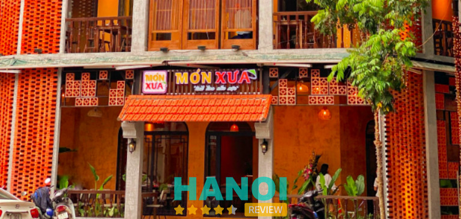
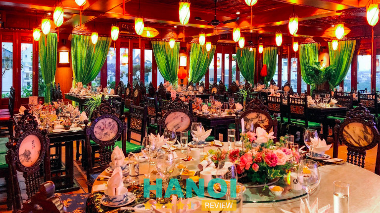
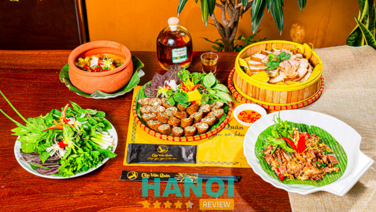
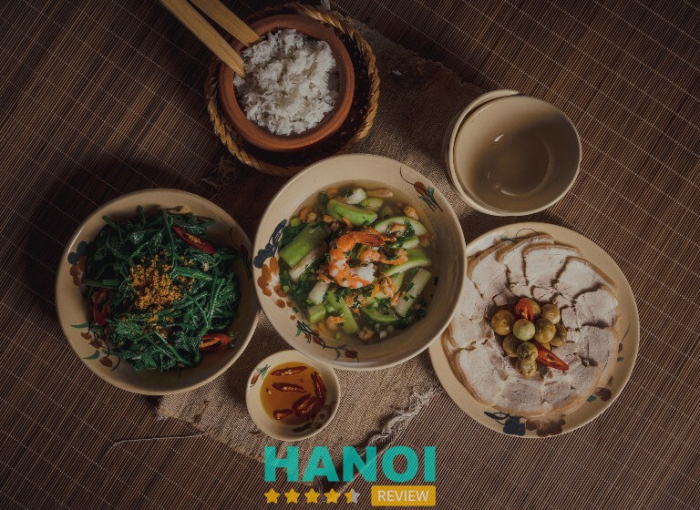
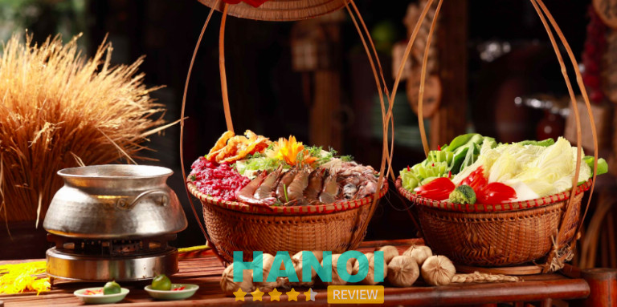
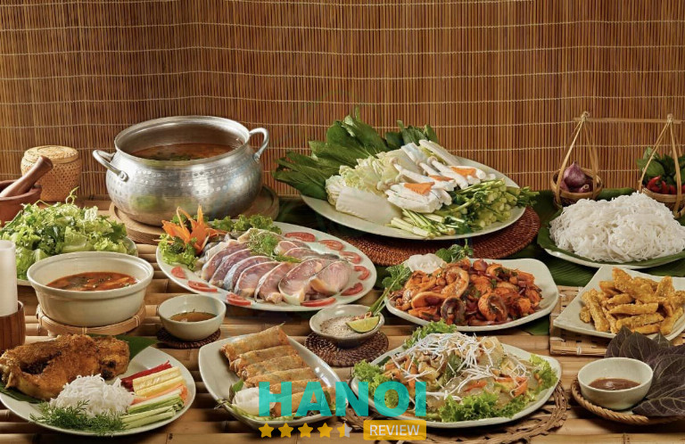
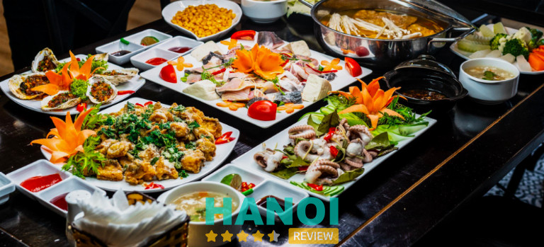
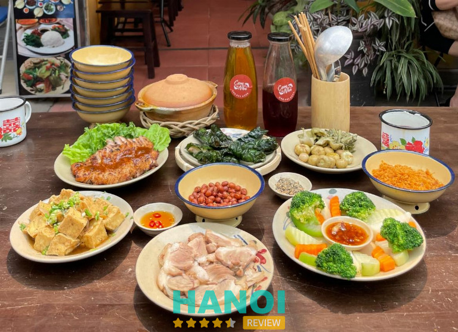
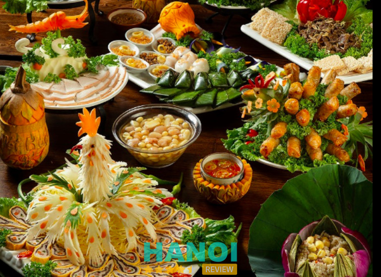

10 Nhà hàng ẩm thực Việt tại Hà Nội ngon đậm vị truyền thống
Có nhiều nhà hàng ẩm thực Việt ở Hà Nội, mang đến cho người dân địa phương và du khách những bữa ăn đậm vị truyền thống của “dải đất hình chữ S”. Tuy nhiên, việc lựa chọn địa điểm ăn uống phù hợp là không hề dễ dàng bởi mỗi nhà hàng đều mang đến một trải nghiệm hương vị khác nhau.
Top 10 Nhà hàng ẩm thực Việt ở Hà Nội ngon nhất
Ẩm thực Việt Nam là sự kết tinh của văn hóa ẩm thực đa dạng và phong phú, được hình thành và phát triển qua nhiều thế kỷ. Các món ăn Việt không chỉ thu hút bởi hương vị đặc trưng mà còn bởi sự tinh tế trong cách chế biến và trình bày, phản ánh đậm nét bản sắc dân tộc và tinh thần của người Việt Nam. Từ Bắc vào Nam, mỗi vùng miền đều có những món ăn đặc trưng, mang đậm hương vị riêng biệt, tạo nên một bức tranh ẩm thực đa sắc màu.
Nếu đang có nhu cầu thưởng thức các món ăn đặc trung Việt Nam thì dưới đây là danh sách 10 nhà hàng ẩm thực Việt nổi tiếng ở Hà Nội mà bạn không nên bỏ qua:
Quán Xưa – Món Xưa
Quán Xưa – Món Xưa là điểm đến không thể bỏ qua đối với những ai ở Hà Nội và muốn trải nghiệm không gian ẩm thực Việt truyền thống trong không gian cổ kính và yên bình. Nhà hàng này nổi bật với kiến trúc đậm chất Việt Nam truyền thống, từ những ô cửa gỗ mộc mạc đến bộ bát đĩa mang đầy dấu ấn văn hóa. Tông màu vàng chủ đạo của nhà hàng không chỉ toát lên vẻ ấm áp mà còn tạo cảm giác thân thuộc, gần gũi.
Không chỉ có không gian đẹp, Món Xưa còn làm say lòng thực khách bởi thực đơn phong phú với hơn 50 món ăn Việt Nam đặc sắc. Các món ăn tại đây được chế biến từ bàn tay tài hoa của đầu bếp, giữ trọn vẹn hương vị truyền thống nhưng không kém phần tinh tế. Từ lẩu ốc đậm đà, mẹt gà lên mâm, cho đến ốc nhồi thịt và chả ốc, mỗi món ăn tại Món Xưa đều khiến thực khách nhớ mãi không quên.

Nhà hàng Quán Xưa – Món Xưa cũng gây ấn tượng với những món ăn độc đáo như gà rí chiên mắm, chả ốc phố cổ, ếch đồng xào măng cay, trứng tráng cháy tỏi, và nộm sứa biển xào ướm. Những món ăn này không chỉ đậm đà, giòn dai mà còn được kết hợp hài hòa, tạo nên những trải nghiệm ẩm thực khó quên cho thực khách.
Quán Xưa – Món Xưa là sự lựa chọn lý tưởng cho những buổi hẹn hò, gặp gỡ bạn bè hay đơn giản là những phút giây thư giãn cuối tuần. Với không gian yên tĩnh, thực đơn phong phú và chất lượng phục vụ tận tình, nhà hàng hứa hẹn mang lại cho thực khách những trải nghiệm ẩm thực đích thực và đầy ấn tượng.
Thông tin liên hệ:
- Địa chỉ: 25 Ngõ 59 Láng Hạ, Ba Đình, Hà Nội
- Điện thoại: 0962 206 667
- Website: quanxuamonxua.com
- Facebook: FB.com/quanxuamonxua
Xem thêm: 10 Nhà hàng tại Hà Nội ngon nổi tiếng, dịch vụ tốt nhất
Nhà hàng Cơm Việt
Nhà hàng Cơm Việt, nằm giữa lòng Thủ đô là địa chỉ lý tưởng để bạn trải nghiệm tinh hoa ẩm thực Việt. Thiết kế theo phong cách kiến trúc truyền thống, Cơm Việt không chỉ là nơi thưởng thức những bữa ăn lành mạnh mà còn là điểm dừng chân yên ả giữa cuộc sống đô thị sôi động.
Cơm Việt gây ấn tượng mạnh mẽ với thực khách thông qua menu đa dạng với hơn 20 món ăn Việt, từ những món ăn truyền thống đến các biến tấu hiện đại. Mỗi món ăn tại đây không chỉ ngon miệng mà còn được trình bày một cách tinh tế, qua đôi bàn tay khéo léo của Bếp trưởng, nhằm mang lại vẻ đẹp văn hóa ẩm thực Việt.

Nhà hàng còn được thiết kế với nhiều không gian khác nhau, từ sảnh chính rộng rãi đến các phòng VIP sang trọng, và cả tầng thượng thoáng đãng với mái ngói xưa cũ. Ngoài ra, Cơm Việt còn trưng bày các cổ vật có tuổi đời hàng trăm năm, mang đến cho thực khách không chỉ bữa ăn ngon mà còn là cơ hội khám phá những câu chuyện lịch sử đặc sắc.
Dịch vụ tại Cơm Việt cũng là một điểm sáng khi đội ngũ nhân viên luôn sẵn sàng phục vụ với thái độ nhiệt tình và chu đáo. Sự kết hợp hoàn hảo giữa không gian đậm chất Việt, thực đơn phong phú và dịch vụ chuyên nghiệp đã làm nên tên tuổi của Cơm Việt như một trong những nhà hàng món Việt ngon nhất tại Hà Nội.
Thông tin liên hệ:
- Địa chỉ: 63 Phạm Hồng Thái, Ba Đình, Hà Nội
- Điện thoại: 087 777 1163
- Email: comvietrestaurant63@gmail.com
- Website: comvietrestaurant.com.vn
- Facebook:FB.com/comviet63phamhongthai
Cẩm Viên Quán
Nằm trên phố Hoàng Ngân, sầm uất của Thủ đô, Cẩm Viên Quán mang đến cho thực khách một không gian ấm áp và gần gũi để thưởng thức hương vị ẩm thực núi rừng Việt Nam đặc sắc. Thiết kế đậm chất Đông Dương, từ khu vực trong nhà đến sân vườn, nhà hàng vừa giữ gìn nét lịch sự, vừa toát lên sự thân quen, là nơi lý tưởng để thực khách tránh xa nhịp sống hối hả, bộn bề của đô thị.
Điểm nổi bật của Cẩm Viên Quán chính là thực đơn đặc sản núi rừng phong phú, từ chim trời, vịt trời đến các món ẩm thực đồng quê đặc sắc. Những nguyên liệu được tuyển chọn kỹ lưỡng, đảm bảo tươi ngon và giàu dưỡng chất, cùng với sự kết hợp gia vị tinh tế của đầu bếp chuyên nghiệp, mỗi món ăn tại đây không chỉ đậm đà mà còn được bày trí đẹp.

Cẩm Viên Quán cũng rất thích hợp cho những buổi liên hoan, hội họp ấm cúng. Với hệ thống phòng VIP trang nhã có sức chứa từ 20 đến 50 người, cùng khu vực sân vườn rộng rãi, thực khách có thể tổ chức các bữa tiệc theo nhiều phong cách khác nhau, từ riêng tư đến ngoài trời.
Sự phong phú của thực đơn, kết hợp với không gian hoài cổ và dịch vụ chu đáo, Cẩm Viên Quán là điểm đến không thể bỏ qua cho những ai yêu thích ẩm thực núi rừng và muốn tìm kiếm một bầu không khí thanh bình, ấm cúng ngay giữa lòng Thủ đô Hà Nội.
Thông tin liên hệ:
- Địa chỉ: 159 Hoàng Ngân, Trung Hòa, Cầu Giấy, Hà Nội
- Điện thoại: 090 223 6159
- Email: camvienquan@gmail.com
- Website: camvienquan.vn
- Facebook: FB.com/camvienquan
Viet Restaurant Hanoi
Viet Restaurant không chỉ là một nhà hàng ẩm thực mà còn là nơi truyền tải tinh thần ấm áp, tận tâm và chân thành đến từng thực khách. Khi bước chân vào Viet Restaurant, bạn sẽ ngay lập tức cảm nhận được sự quan tâm đặc biệt mà nhà hàng dành cho mình, thông qua thái độ phục vụ chu đáo và thân thiện của đội ngũ nhân viên.
Tại Viet Restaurant, mỗi nhân viên không chỉ là người phục vụ mà còn là bạn đồng hành, sẵn sàng lắng nghe, tư vấn và hỗ trợ để mỗi bữa ăn của bạn trở thành trải nghiệm ẩm thực tuyệt vời nhất. Nhà hàng chú trọng từng chi tiết nhỏ, từ trang trí đến cách bài trí bàn ăn, nhằm tạo ra không gian ấm cúng và thân thiện như đang thưởng thức một bữa cơm gia đình.

Không chỉ phục vụ những món ăn ngon, Viet Restaurant còn là nơi lưu giữ và truyền đạt những giá trị văn hóa Việt Nam qua từng món ăn. Những món ăn truyền thống được chế biến tỉ mỉ, từ những món chay đến món mặn, mỗi món đều mang đến một cuộc phiêu lưu đầy hương vị và sâu sắc về lịch sử và ý nghĩa của ẩm thực Việt.
Với mục tiêu tạo ra những trải nghiệm đặc biệt và ấn tượng, Viet Restaurant mong muốn mang đến cho thực khách cảm nhận sâu sắc về văn hóa và đặc sản ẩm thực Việt Nam thông qua không chỉ những món ăn ngon miệng được chế biến từ nguyên liệu tươi ngon nhất mà còn qua không gian ấm cúng, thân thiện của nhà hàng.
Thông tin liên hệ:
- Địa chỉ: JM Marvel Hotel, 16 Hàng Da, Hàng Bông, Hoàn Kiếm, Hà Nội
- Điện thoại: 024 3823 8855
- Email: res@vietrestauranthanoi.com
- Website: vietrestauranthanoi.com
- Facebook: FB.com/VietRestaurantHanoi
Đọc thêm: 5 Nhà hàng rượu vang tại Hà Nội nổi tiếng sang trọng nhất
Mẹt Vietnamese Restaurant & Vegan
Mẹt Vietnamese Restaurant & Vegan nằm trên một trong những con phố đẹp nhất của phố cổ Hà Nội, là điểm đến không thể bỏ qua cho những ai yêu thích ẩm thực Việt Nam truyền thống. Tại đây, bạn sẽ được thưởng thức một bữa tiệc ẩm thực đa dạng, phong phú, tôn vinh bản sắc của các món ăn Việt từ ba miền.
Không gian của Nhà hàng Mẹt được thiết kế nhằm lưu giữ và phát huy bản sắc ẩm thực Việt. Trang trí tinh tế và dịch vụ chuyên nghiệp tại nhà hàng tạo cảm giác như khách hàng đang trở về với bữa cơm gia đình Việt truyền thống.
Mẹt Vietnamese Restaurant & Vegan không chỉ phục vụ các món ăn gia đình mà còn có menu cho người ăn chay và các món ăn nhẹ, đáp ứng nhu cầu đa dạng của thực khách. Với mức giá cạnh tranh và menu phong phú, nhà hàng tự hào là điểm hẹn lý tưởng cho những ai muốn khám phá và trải nghiệm sự tinh túy của ẩm thực Việt Nam tại Hà Thành. Nhà hàng Mẹt rất hân hạnh được chào đón và phục vụ quý khách.
Thông tin liên hệ:
- Địa chỉ: 29 Hàng Trống, Hoàn Kiếm, Hà Nội
- Điện thoại: 0985 627 976
- Email: dieuhanhdnt@mail.com
- Website: metvietnameserestaurant.com
- Facebook: FB.com/metvietnameserestaurant
Nhà Hàng Chợ Quê Hoàng Ngân
Người dân Hà Nội và du khách muốn khám phá và trải nghiệm tinh hoa ẩm thực Việt Nam trong một không gian mộc mạc và truyền thống của làng quê Bắc Bộ thì Nhà Hàng Chợ Quê Hoàng Ngân là lựa chọn hàng đầu mà bạn nên lựa chọn. Mỗi món ăn tại Chợ Quê được đầu bếp chuẩn bị cầu kỳ và tỉ mỉ, phản ánh tình yêu và niềm đam mê ẩm thực truyền thống của đội ngũ nhà hàng.
Với cam kết mang đến tất cả những tinh túy trong ẩm thực đồng quê Việt Nam sang trọng và đẳng cấp, Nhà Hàng Chợ Quê Hoàng Ngân là điểm đến không thể bỏ qua cho những ai yêu mến và trân trọng ẩm thực Việt giữa lòng Thủ đô. Menu tại đây rất đa dạng, từ những món ăn đặc sắc của đồng quê Việt Nam, như những món kho, canh bún đến các loại bánh đặc trưng.

Không chỉ nổi tiếng với không gian mở mộc mạc, Chợ Quê còn có hệ thống phòng VIP cực kỳ rộng rãi, có sức chứa lên tới 100 khách, phù hợp với các buổi tiệc tư nhân hoặc sự kiện công ty. Đây là một không gian lý tưởng để thưởng thức ẩm thực trong một không gian yên tĩnh và đẳng cấp.
Nhà hàng còn nổi bật với thực đơn đa dạng, phục vụ nhiều món ngon đặc sắc từ Nam chí Bắc, mang đến cho thực khách những bữa tiệc ấm cúng và chất lượng, ngân vang những làn điệu Quan Họ Dân Ca đặc sắc. Phong cách phục vụ chuyên nghiệp và tận tâm của Nhà Hàng Chợ Quê đảm bảo trải nghiệm ẩm thực không chỉ là bữa ăn mà còn là một hành trình khám phá văn hóa ẩm thực phong phú của Việt Nam.
Thông tin liên hệ:
- Địa chỉ: 01 Ngõ 163 Hoàng Ngân, Trung Hoà, Cầu Giấy, Hà Nội
- Điện thoại: 093 281 1080
- Facebook: FB.com/nhahangchoque.vn
Nhà Hàng Mạnh Cá Lăng
Với mong muốn gìn giữ và phát huy ẩm thực tinh hoa từ khắp nơi trên đất nước Việt Nam đến với thủ đô, Nhà Hàng Mạnh Cá Lăng đã được thành lập. Nhà hàng tự hào mang đến cho thực khách những món ăn truyền thống đậm đà, pha trộn giữa văn hóa dân tộc và sự sang trọng, hấp dẫn.
Mạnh Cá Lăng là điểm đến lý tưởng cho những ai yêu thích ẩm thực truyền thống Việt Nam, nơi bạn có thể tận hưởng những món ăn ngon trong không gian ấm cúng và thoáng đãng. Nhà hàng có sức chứa lên đến 200 thực khách, với những khu vực ngồi riêng tư thích hợp cho mọi nhu cầu từ gia đình đến các buổi liên hoan công ty hay tụ họp bạn bè.

Đặc biệt, Mạnh Cá Lăng còn sở hữu một khu sân khấu hiện đại, sẵn sàng phục vụ các hoạt động giải trí như hát hò và hội họp, làm cho mỗi buổi tụ họp thêm phần sôi động và thú vị. Không gian rộng rãi và mát mẻ của nhà hàng cùng với đội ngũ nhân viên phục vụ nhiệt tình, chu đáo sẽ đảm bảo một trải nghiệm ẩm thực tuyệt vời cho khách hàng.
Với thực đơn món ăn vô cùng đa dạng, từ những món ăn dân dã đến những món ăn sang trọng, Mạnh Cá Lăng hứa hẹn sẽ làm hài lòng cả những thực khách khó tính nhất. Nhà hàng Mạnh Cá Lăng không chỉ là một nơi để ăn uống, mà còn là nơi để kết nối, chia sẻ và tạo nên những kỷ niệm đáng nhớ.
Thông tin liên hệ:
- Địa chỉ: BT2 – Lô 22 KĐT Mễ Trì Hạ, Nam Từ Liêm, Hà Nội
- Điện thoại: 098 225 5466
- Website: manhcalang.vn
- Facebook: FB.com/manhcalangmetri
Nhà Hàng Phiến Hoan
Nhà hàng Phiến Hoan, với 30 năm kinh nghiệm trong ngành ẩm thực, đã trở thành một trong những lựa chọn hàng đầu cho những ai đang tìm địa chỉ để thưởng thức món Việt tại Thủ đô. Tọa lạc tại vị trí đắc địa, nhà hàng này nổi tiếng với không gian đẳng cấp và sang trọng, đáp ứng mọi nhu cầu của khách hàng từ tiệc gia đình, liên hoan công ty đến tụ tập bạn bè.
Menu của Phiến Hoan là sự kết hợp tinh tế của ẩm thực truyền thống Bắc Bộ và các món ăn hiện đại, với hơn 100 lựa chọn hấp dẫn. Khách hàng có thể thưởng thức các món đặc sản như Cá Lăng Việt Trì, cá chiên, cá anh vũ, cùng với các món baba, dê núi, lợn mán và đa dạng hải sản, chim các loại. Những món lẩu cực hot cũng luôn sẵn sàng phục vụ, đảm bảo mang lại những trải nghiệm ẩm thực độc đáo và thỏa mãn mọi khẩu vị.

Đội ngũ nhân viên và đầu bếp tại Phiến Hoan là những chuyên gia hàng đầu, luôn sẵn sàng mang đến cho thực khách sự phục vụ chuyên nghiệp và thân thiện. Nhà hàng tự hào về đội ngũ đã được đào tạo bài bản, có kỹ năng cao, đảm bảo mỗi món ăn không chỉ ngon miệng mà còn được trình bày một cách bắt mắt và ấn tượng.
Không gian rộng rãi và thoáng đãng của Phiến Hoan là điểm cộng lớn, tạo nên một môi trường lý tưởng cho các dịp đặc biệt như tiệc tất niên, sinh nhật, họp lớp, và các buổi liên hoan khác. Với phong cách phục vụ tận tình và menu đa dạng, Phiến Hoan hứa hẹn sẽ làm hài lòng khách hàng thập phương, mang đến cho họ những khoảnh khắc ngon miệng và khó quên tại Hà Nội.
Thông tin liên hệ:
- Địa chỉ: 18 HDI Homes, 01 Mạc Thái Tông, KĐT Nam Trung Yên, Cầu Giấy Hà Nội
- Điện thoại: 093 618 8881
- Website: quancabosong.com
- Facebook: FB.com/nhahangphienhoan
Cơm Nhà
Nhà hàng Cơm Nhà, nằm yên bình trên con phố Trần Huy Liệu, chuyên phục vụ các món ăn gia đình đầy ấm áp và thân thuộc. Đây là nơi mỗi góc nhỏ, từ vật dụng trang trí đến từng đôi bát đũa, đều được chăm chút tỉ mỉ, mang đến cho thực khách cảm giác như đang được thưởng thức bữa cơm tại chính ngôi nhà của mình.
Cơm Nhà không chỉ gây ấn tượng bởi không gian ấm cúng mà còn bởi chất lượng món ăn đích thực, ngon lành, sạch sẽ và giá cả hợp lý. Nhà hàng tự hào với một thực đơn đa dạng, được thay đổi hàng ngày, đảm bảo mang đến cho thực khách những trải nghiệm ẩm thực mới mẻ, tránh sự ngán ngẩm khi thường xuyên ghé thăm. Mỗi món ăn tại đây là sự kết hợp tinh tế của nguyên liệu tươi sạch, được lựa chọn kỹ lưỡng và sử dụng trong ngày.

Cơm Nhà cam kết không lặp lại bất kỳ món ăn nào trong vòng ba tuần, giúp đảm bảo sự mới lạ và hấp dẫn cho thực đơn. Phương châm “nhà sạch thì mát, bát sạch ngon cơm” không chỉ là lời nói suông mà đã trở thành một phần tất yếu trong triết lý kinh doanh của nhà hàng.
Cơm Nhà là điểm hẹn lý tưởng cho những buổi tụ họp gia đình, gặp gỡ bạn bè hay chỉ đơn giản là khi bạn muốn tìm một nơi để thư giãn và thưởng thức những món ăn Việt chân chất, ngon lành như do chính tay mẹ nấu. Với phong cách phục vụ chân thành và chu đáo, Cơm Nhà chắc chắn sẽ khiến bạn cảm thấy như đang quay trở về nhà, nơi có những bữa cơm gia đình ngọt ngào và ấm áp.
Thông tin liên hệ:
- Địa chỉ: 106D1 Trần Huy Liệu, Giảng Võ, Ba Đình, Hà Nội
- Điện thoại: 090 441 6226
- Email: sales@comvanphonghn.com
- Facebook: FB.com/comvphn
Nhà Hàng Nét Huế
Với hơn 14 năm kinh nghiệm, Nhà hàng Nét Huế đã trở thành một biểu tượng của ẩm thực Việt mang hơi thở đất “cố đô” ngay tại lòng Hà Thành. Trải qua nhiều năm hoạt động, nhà hàng này đã chiếm được trái tim của biết bao thực khách nhờ sự tận tâm trong việc mang đến hương vị thuần khiết, đậm đà của món ăn xứ Huế.
Để đảm bảo mỗi món ăn luôn giữ được hương vị đặc trưng, Nét Huế chỉ sử dụng nguyên liệu chính gốc từ Huế, được vận chuyển liên tục và trực tiếp ra Hà Nội. Sự tinh tế trong khâu lựa chọn nguyên liệu không chỉ giúp nhà hàng tái hiện chính xác mùi vị của xứ Huế mà còn đảm bảo vệ sinh an toàn thực phẩm.

Mỗi món ăn tại Nét Huế là một tác phẩm nghệ thuật, từ cách chế biến cầu kỳ đến trình bày đơn giản nhưng vô cùng tinh tế, phản ánh đúng chất Huế – một Huế hài hòa giữa chua, cay, mặn, ngọt, đắng, thơm, bùi, dẻo. Nhà hàng không chỉ là nơi để thưởng thức ẩm thực mà còn là nơi để khám phá văn hóa ẩm thực đa dạng của Huế qua từng món ăn đặc trưng như bún bò Huế, nem lụi, bánh bèo, chả tôm và nhiều món ăn truyền thống khác.
Nét Huế đã thành công trong việc chắp cánh cho hương vị xứ Huế bay xa, mang đến cho thực khách Hà Nội không chỉ bữa ăn ngon mà còn là chuyến du ngoạn văn hóa đầy màu sắc. Với sự phủ sóng rộng khắp và chất lượng ẩm thực đặc sắc, Nhà hàng Nét Huế chắc chắn sẽ là điểm đến yêu thích của mọi tín đồ ẩm thực.
Thông tin liên hệ:
- Địa chỉ: 198 Hàng Bông, Quận Hoàn Kiếm, Hà Nội
- Điện thoại: 1900 9077
- Email: kinhdoanh.nethue@gmail.com
- Website: nethue.com.vn
- Facebook: FB.com/nhahangnethue
6 tiêu chí đánh giá chất lượng nhà hàng món Việt ở Hà Nội
Khi đánh giá chất lượng của một nhà hàng món Việt ở Hà Nội, người thưởng thức không chỉ quan tâm đến hương vị của món ăn mà còn cảm nhận về một loạt các yếu tố khác. Mỗi yếu tố đều đóng vai trò quan trọng trong việc tạo nên danh tiếng và sự hài lòng của khách hàng đối với nhà hàng. Dưới đây là 6 tiêu chí hàng đầu để đánh giá chất lượng một nhà hàng món Việt ở Hà Nội:
- Chất lượng món ăn: Đây là yếu tố quan trọng nhất, bao gồm hương vị, mùi thơm, sự tươi ngon của nguyên liệu, và cách chế biến món ăn.
- Phong cách phục vụ: Sự nhiệt tình, thái độ phục vụ của nhân viên cũng như thời gian chờ đợi món ăn phải được xem xét.
- Không gian nhà hàng: Không gian phải sạch sẽ, thoáng đãng, phù hợp với không khí và văn hóa mà nhà hàng mong muốn truyền tải.
- Giá cả: Giá cả của các món ăn phải phù hợp với chất lượng món ăn và dịch vụ mà nhà hàng cung cấp.
- Sự đa dạng của thực đơn: Một thực đơn đa dạng cho thấy sự sáng tạo và khả năng đáp ứng nhu cầu khác nhau của thực khách.
- Vệ sinh an toàn thực phẩm: Đây là một yếu tố cần thiết, đảm bảo món ăn không chỉ ngon mà còn an toàn cho sức khỏe của thực khách.
Từ những món ăn đặc trưng đến không gian ấm cúng và dịch vụ tận tình, mỗi nhà hàng trong danh sách 10 nhà hàng món Việt nổi bật ở Hà Nội đều mang đến những trải nghiệm ẩm thực độc đáo và khó quên. Dù bạn là người yêu thích hương vị truyền thống hay muốn thưởng thức các tạo tác ẩm thực mới lạ, những nhà hàng này chắc chắn sẽ làm hài lòng và đáp ứng mọi yêu cầu.
Có thể bạn quan tâm
- 10 Nhà hàng Dimsum tại Hà Nội ngon đậm đà hương vị Trung Hoa
- 5 Nhà hàng hải sản tại quận Nam Từ Liêm tươi ngon, nổi tiếng
- 5 Nhà hàng buffet hải sản tại Hà Nội tươi ngon, ăn thoả thích
- 10 Nhà hàng tổ chức sinh nhật tại Hà Nội đồ ăn ngon, bày trí đẹp
DOANH NGHIỆP: Đăng tải thông tin MIỄN PHÍ.
Tin đọc nhiều


7 Quán cơm văn phòng tại quận Hà Đông ngon như cơm nhà
Các quán cơm văn phòng tại quận Hà Đông hiện nay đang được rất nhiều khách hàng ưa chuộng vì luôn có thực đơn phong...
5 Nhà hàng hải sản tại Q. Nam Từ Liêm tươi ngon, nổi tiếng
Nổi tiếng với các món ăn tươi ngon, các Nhà hàng hải sản tại quận Nam Từ Liêm luôn đáp ứng mọi nhu cầu thưởng...
10 Nhà hàng Nhật Bản tại Hà Nội ngon đáng trải nghiệm nhất
Thủ đô sôi động là nơi hội tụ của nhiều nền ẩm thực đặc sắc. Trong đó, các nhà hàng Nhật Bản tại Hà Nội...
10 Quán ăn chay tại Hà Nội ngon nổi tiếng, đa dạng món
Các quán ăn chay tại Hà Nội không chỉ mang lại những món ăn ngon, chất lượng mà còn góp phần vào sự phát triển...

Trở thành người đầu tiên bình luận cho bài viết này!